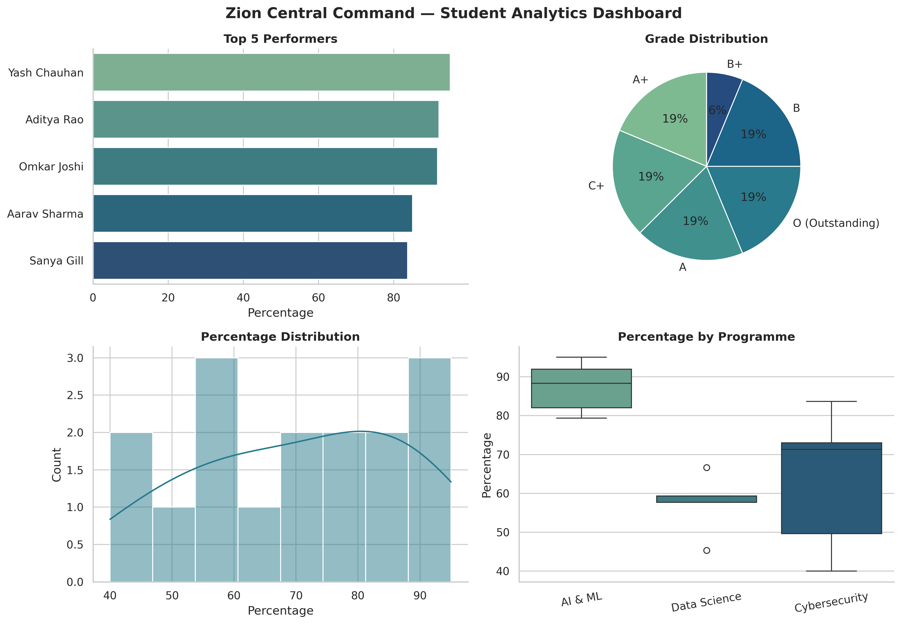

MCA · AI & ML · UPES, Dehradun
There is no spoon.
There is only Python.
A complete Python laboratory journey, told as Neo's progression from waking up inside the simulation to running Zion Central Command.
- 10
- Experiments
- 1
- Capstone
- ∞
- Possibilities
neo@zion:~$ python journey.py
Loading the construct...
[ OK ] 10 experiments linked
[ OK ] Zion dashboard deployed
neo@zion:~$
// Select a module. Follow the signal.
01 / Course modules
Choose your exit.
Ten notebook experiments that build one practical Python foundation.
10 modules found
No modules match that signal. Try another search.
02 / The training path
From first command
to full control.
- 01—02Wake up
Syntax, values, input and operators.
- 03—05Read the rules
Decisions, loops, strings and sets.
- 06—09Shape the system
Collections, functions, files and objects.
- 10 +Build Zion
Data analysis becomes a working dashboard.

03 / Final transmission
Mini project // 011
Zion Central
Command.
A student-analytics system that turns imperfect raw records into useful class intelligence: validation, object models, custom exceptions, summaries, search and visualization.
- Reads and validates imperfect CSV data
- Models students with classes and exceptions
- Surfaces performance patterns through charts
Zion terminal / live summary
Decode the data.
Run a safe simulation of the capstone pipeline using its real dataset results.
Choose a protocol to inspect the student-analytics pipeline.
04 / Operator console
Talk to the construct.
Try help, ls, status, open 7, or mini.
neo@zion:~$ Connection established. Type help to see available commands.